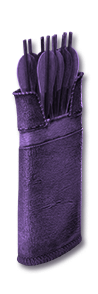
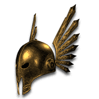
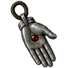
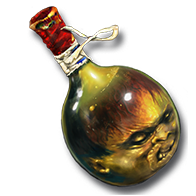

Each point widens the aura or curse by one yard, up to +4 yards from items.
+1 yard+# Yards to Aura and Curse RadiusApplies to the supported skills below.
42 supported skills
Amazon
Necromancer
Paladin
Barbarian
Druid
Assassin
Get this effect
Runewords
Warlord's Call
Myr → Vex → Lo
3 sockets · Primal Helm
+4 Yards to Aura and Curse RadiusRequired level 59Magic & rare modifiers


of Reach
Magic & rare suffix
+2 Yards to Aura and Curse Radius- Voodoo Heads
- Auric Shields
- Scepter
- Wand
- Amulet
- Circlet
- Amazon Item
of Far Reach
Magic & rare suffix
+4 Yards to Aura and Curse Radius- Voodoo Heads
- Auric Shields
- Scepter
- Wand
- Amulet
- Circlet
- Amazon Item

of Reach
Magic & rare suffix
+2 Yards to Aura and Curse Radius- Primal Helm
of Far Reach
Magic & rare suffix
+4 Yards to Aura and Curse Radius- Primal Helm
Equipment

The Witch's Fletching
Hexed Arrows
+4 Yards to Aura and Curse RadiusRequired level 85
The Witch's Fletching
Hexed Bolts
+4 Yards to Aura and Curse RadiusRequired level 85
The Consecrated Shaft
Anointed Arrows
+6-8 Yards to Aura and Curse RadiusRequired level 90
The Consecrated Shaft
Anointed Bolts
+6-8 Yards to Aura and Curse RadiusRequired level 90
Voice of the Ancients
Slayer Guard
+3 Yards to Aura and Curse RadiusRequired level 58
Hand of Dominion
Amulet
+4 Yards to Aura and Curse RadiusRequired level 85
The Far Requiem
Minion Skull
+6-8 Yards to Aura and Curse RadiusRequired level 85Oil & gem crafts


Crimson Oil
+ Perfect Skull
- Amulet / Voodoo Heads / Auric Shields
- +4 Yards to Aura and Curse Radius